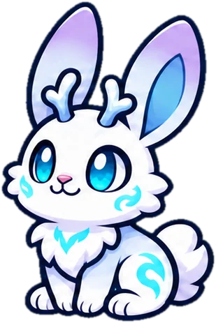

Tap a stage to read its story.
Frostkitten is a plump little snow leopard cub with spotted white-and-grey fur, enormous blue eyes, and oversized paws it keeps tripping over. It tumbles through the lower snowfields of Frozen Peaks chasing wind-blown ice crystals as if they were prey. Its spotted coat is too thick for the tumbles it takes, and it bounces right back each time. The guardians say it was the first creature to reach the summit of the Peaks as a bet, and it still holds the record, though no one quite remembers how.
Field note: Frostkitten sneezes when it senses an incoming storm - never wrong, always inconvenient.
Storm Spire. Frostkitten and its family are found in the Storm Spire. See everyone who lives there.
Share a Bond Food that matches its types to become friends. Frostkitten loves:
A Bond Food is not a trick. It joins your spirit with the Kimuro's spirit, and only when it chooses you.
Print the Kimuro adventure packs: mazes, cards, a board game and Bond Mark medals.
See the printable packs